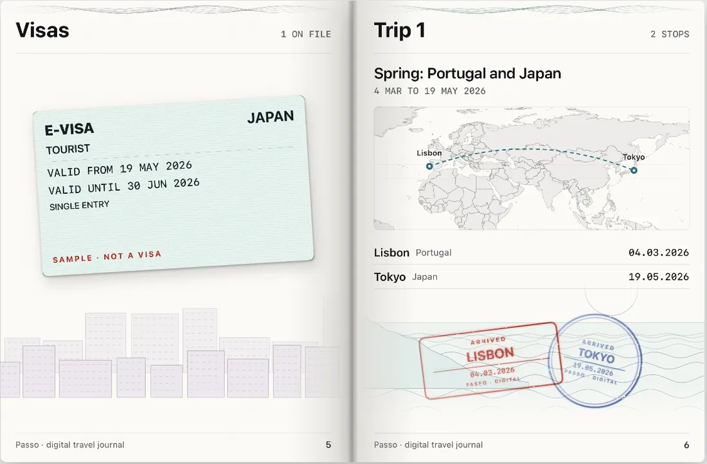
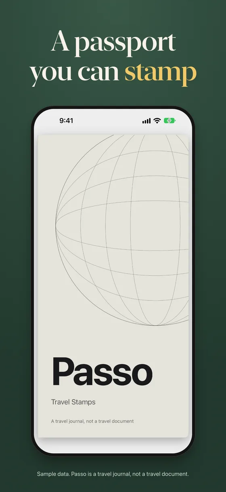
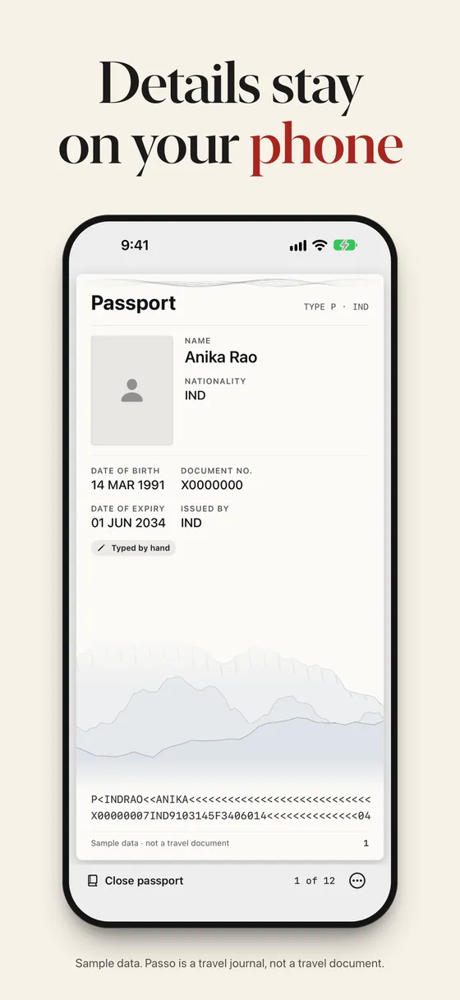
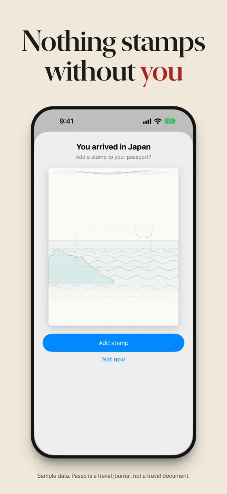
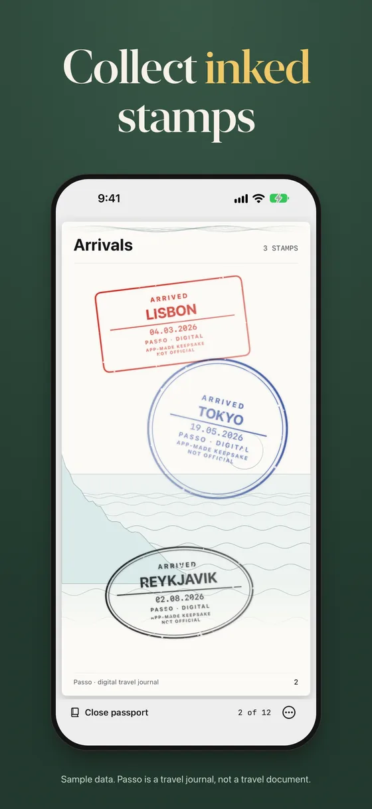
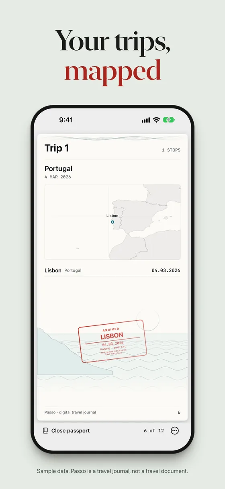
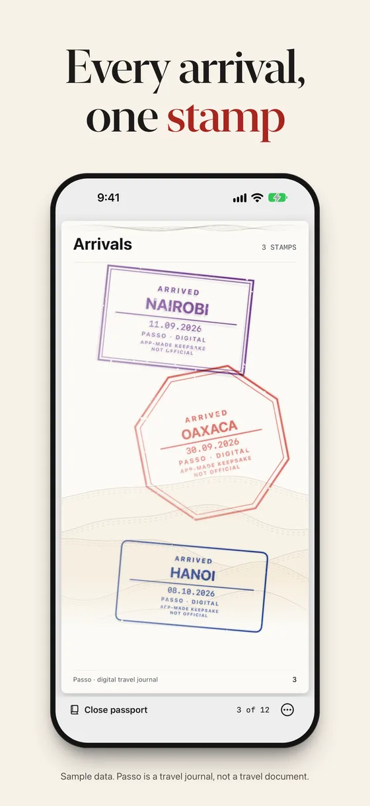
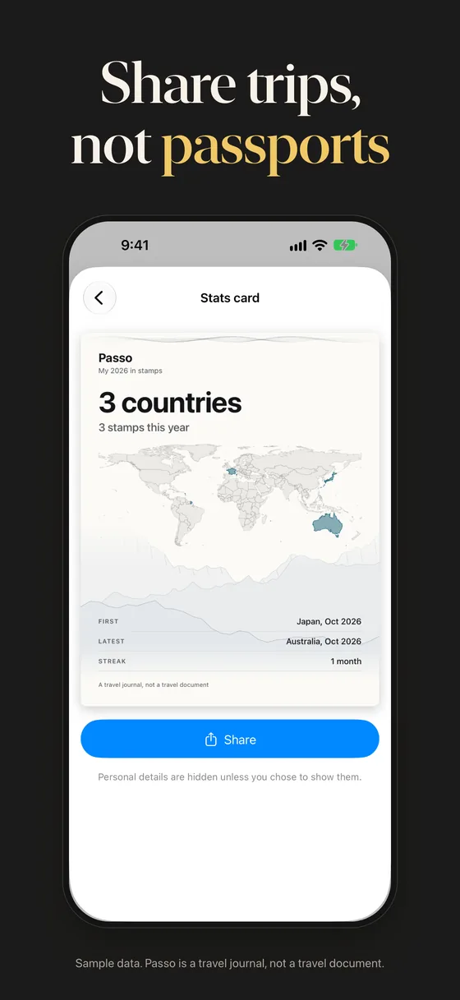

Passo
Travel stamps journal for iPhone
A passport you can stamp.
A private travel journal for your iPhone, made to feel like the real book. Your details stay on the phone. A stamp lands only when you say yes.
Free on the App Store for iPhone with iOS 18 or later. A travel journal, not a travel document.

- The problem
- Trips blur together in a photo roll, and keeping a record of them should not mean handing your passport to an app.
- What we fixed
- Passo keeps your passport details in an encrypted vault on the iPhone, adds a stamp only after you confirm an arrival, and shares trips with personal fields hidden.
Inside Passo
From the App Store screenshots, with sample data. Swipe through the passport.
-

The coverThe cover of your digital passport book. -

Your passport pageYour passport page, typed in or scanned, kept in the encrypted vault. -

Confirm an arrivalPasso notices the country and asks first. Say yes to add the stamp. -

StampsEach arrival you confirm becomes an inked stamp on the Arrivals page. -

TripsA trip shows its stamps and a map of where you went. -

ArrivalsStamps in different shapes and inks, one for each arrival. -

SharingA stats card for your trips. Personal details are hidden unless you choose to show them.
How it works
Keep your passport on your phone
Scan the two lines on the photo page, or read the chip where your passport supports it (still being tested). It is sealed in an encrypted vault.
Confirm each arrival
Passo notices the country and asks first. Nothing is stamped silently.
Turn the page, share the trip
Export a page turn or a card. Personal fields stay hidden unless you show them.
What you get
Private vault
Passport details are encrypted on the device with a key that needs a device passcode.
Confirm-first stamps
Passo suggests, you decide. Nothing is stamped silently.
Visa scan
Scan a visa onto its page. It is read on the phone, and you check the details.
Trips on a map
Each trip shows its stamps and where you went.
Share video and cards
Export a page-turn video or a stats card. Personal fields are hidden by default.
Expiry reminder
A local notification six months before your passport expires.
Face ID, Touch ID or passcode
The vault opens with Face ID, Touch ID or your passcode.
No account, no analytics
No account, no third-party analytics, ads or trackers, in the app or on its website.
Stays on your device
On your iPhone
- Passport details are encrypted with a key held in the iPhone Keychain, and are not uploaded anywhere
- Camera pictures are processed on the phone
- Location suggests a stamp; you confirm each one, and only the country, date and a rounded position are kept
Never
- An account
- Analytics, ads or trackers
- A server that holds your passport
Passo is a travel journal. It is not a travel document and does not replace your passport. Its stamps are digital souvenirs, not official entry or exit records. Read Passo's privacy policy.
Get Passo
Free on the App Store for iPhone with iOS 18 or later. A travel journal, not a travel document.
- Platform
- iPhone with iOS 18 or later
- Price
- Free on the App Store
- Account
- None